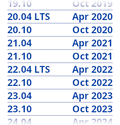

O Xubuntu é um sistema operativo elegante e fácil de utilizar que vem com o ambiente de trabalho Xfce, o que o torna estável, leve e configurável.
É perfeito para quem pretende aproveitar ao máximo o seu computador de secretária ou portátil, com um aspeto moderno e funcionalidades suficientes para uma utilização diária eficiente. Também funciona bem em hardware mais antigo, computadores de placa única com o Raspberry Pi e o Subsistema Windows para Linux (WSL).
O Xubuntu foi lançado pela primeira vez em 2006. É um projeto desenvolvido pela comunidade conduzida pela equipa do Xubuntu. A equipa é composta por voluntários que trabalham em diferentes aspetos do projeto incluindo o design, programação, marketing, testes, página Web, documentação e administração.
Saiba mais na página Web do Xubuntu ou na Wikipedia.
O “X” do Xubuntu significa Xfce, a interface do utilizador e as aplicações incluídas no núcleo do Xubuntu. O “ubuntu” do Xubuntu marca a sua relação com o Ubuntu base no qual o sistema operativo se baseia. Xubuntu pronuncia-se “zoo-bun-too”.
A palavra “ubuntu” representa o núcleo filosófico do sistema operativo. Ubuntu pode ser traduzido como “a humanidade sobre os outros”. Para ler mais acerca da filosofia e das ideias por detrás do Ubuntu e do Xubuntu, consulte a página de Filosofia do Ubuntu.

O Xubuntu produz uma versão de suporte a longa prazo de 2 em 2 anos. Estas versões são suportadas durante 3 anos e uma escolha popular para utilizadores que preferem estabilidade a novas funcionalidades. De 6 em 6 meses, é lançada uma nova versão intermédia para utilizadores que pretendam utilizar as funcionalidades mais recentes com o custo de um ciclo de suporte mais curto de 9 meses. As novas versões são produzidas nos meses de abril e outubro.
O Xubuntu segue o esquema de numeração de versões do Ubuntu, o qual se baseia na data de lançamento da distribuição. A primeira parte da versão indica o ano, enquanto a segunda indica o mês. Por exemplo, a primeira versão do Xubuntu foi lançada em junho de 2006, pelo que o número da versão foi 6.06.
Existem duas edições do Xubuntu: Xubuntu Desktop e Xubuntu Core. O Xubuntu Desktop destina-se a utilizadores comuns e vem com um conjunto de aplicações pré-instaladas cuidadosamente curadas pela equipa do Xubuntu. Inclui um conjunto de ferramentas apropriadas para a maioria das tarefas, desde a edição de imagens e documentos à navegação Web, entre outras.
O Xubuntu Core é uma edição mais simples do que o Xubuntu Desktop, com aplicações apenas para tarefas básicas, tal como a gestão de ficheiros e a emulação de terminal. Isto faz com que que o ISO transferido seja mais pequeno, com menos suplementos e bibliotecas instalados e que o sistema operativo seja ainda mais leve em termos de recursos. Esta edição é adequada para utilizadores que apenas pretendam instalar as aplicações que se adequem às suas necessidades específicas a partir de uma base mais limpa, para que possam criar o seu sistema operativo personalizado.
O projeto do Xubuntu encontra-se totalmente alinhado com os princípios do desenvolvimento de software livre onda as pessoas são encorajadas a utilizar software que protege as suas liberdades, consultar o seu código-fonte, melhora-lo e incrementa-lo. Pode saber mais acerca do software livre e da filosofia ideológica e técnica por detrás do mesmo na página Web do GNU.
O Linux surgiu em 1991 pela mão de um estudante finlandês chamado Linus Torvalds. O coração do sistema operativo Xubuntu é o kernel do Linux. O kernel é uma parte fundamental de qualquer sistema operativo e fornece uma ponte de comunicação entre o hardware e o software. Saiba mais acerca do Linux na página Web do kernel do Linux.
O Xfce é o ambiente de trabalho leve utilizado no Xubuntu. Pretende ser rápido e leve em termos de recursos do sistema, ao mesmo tempo que é visualmente apelativo e amigável ao utilizador. O Xfce segue a filosofia tradicional do UNIX de modularidade e reutilização. Saiba mais acerca do Xfce na págian Web do Xfce.
O Xubuntu foi construído com base no trabalho árduo das distribuições Debian e Ubuntu GNU/Linux. Baseado no Ubuntu, o Xubuntu suporta uma ampla variedade de hardware e fornece acesso a um grande arquivo de software livre e de código aberto. Muito deste software, incluindo os pacotes que compõem o ambiente de trabalho Xfce, são disponibilizados pela equipa do Xfce do Debian.